| Created: Oct. 11, 2018. Revised: March 21, 2019. Copyright © 2018 - 2019 by Victor Manta, Switzerland All rights reserved worldwide. |
|
Nadia Comăneci pe mărcile poştale
Victor MANTA, PWO
La începutul anilor 1980 am părăsit definitiv România comunistă, cu mari dificultăţi, şi m-am stabilit în Europa de Vest. Timp de douăzeci de ani după aceea, de câte ori intram în vorbă cu locuitorii Vestului, primul lucru pe care îl rosteau când aflau de unde am venit era numele Nadia Comaneci.
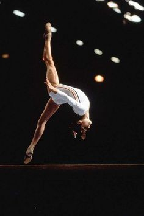
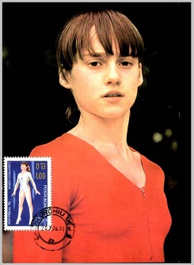
Pentru mulţi dintre ei Europa se termina încă în Austria, după care urma o gaură neagră înconjurată de Cortina de Fier, ei confundau Bucureşti cu Budapesta, etc., dar numele Nadiei deschidea pentru ei, ca şi pentru mine, multe discuţii discuţii legate de ţara pe care o părăsisem.
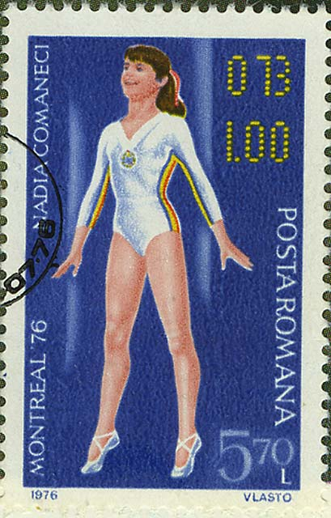
Cei cu care vorbeam îmi cereau amănunte despre Nadia, dar din păcate eu am ştiut foarte puţine lucruri despre viaţa ei zbuciumată şi uneori foarte dificilă. Această pagină filatelică umple lacuna din trecut, completând-o cu imaginile unor mărci poştale frumoase care vorbesc despre trecutul ei glorios.
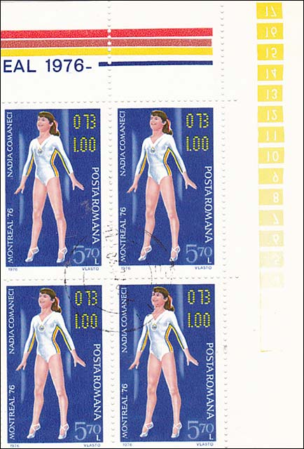
Nadia Elena Comăneci (n. 12 noiembrie 1961, Oneşti, România ) este o gimnastă româncă , prima gimnastă din lume care a primit nota zece într-un concurs olimpic de gimnastică. Este câștigătoare a cinci medalii olimpice de aur. Este considerată a fi una dintre cele mai bune sportive ale secolului XX și una dintre cele mai bune gimnaste ale lumii, din toate timpurile, „Zeiţța de la Montreal”, prima gimnastă a epocii moderne care a luat un 10 absolut. Este primul sportiv român inclus în memorialul International Gymnastics Hall of Fame.
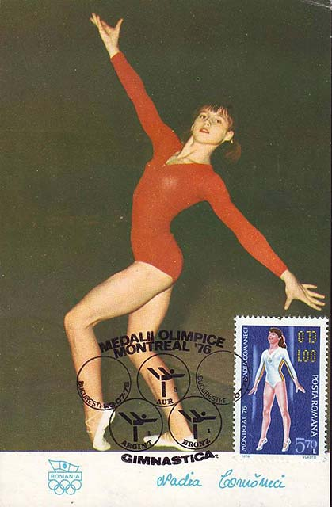
Comăneci is one of the world's best-known gymnasts and is credited with popularizing the sport around the globe. In 2000, she was named as one of the Athletes of the 20th Century by the Laureus World Sports Academy. She has lived in the United States since 1989 and is married to American Olympic gold medal gymnast Bart Conner.
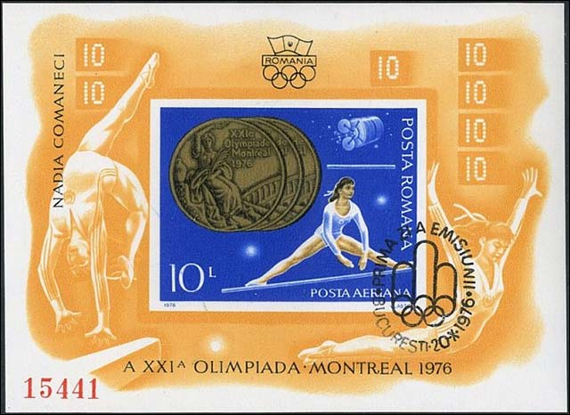
Nadia Comăneci was born on 12 November 1961, in Oneşti , which is a small town in the Carpathian Mountains, in Bacău County, Romania, in the historical region of Western Moldavia. In a 2011 interview, Nadia's mother SȘtefania said that she enrolled her daughter into gymnastics classes simply because she was a child who was so full of energy and active that she was difficult to manage. Comăneci graduated later from University of Bucharest with a degree in sports education that gave her the qualifications to coach gymnastics.
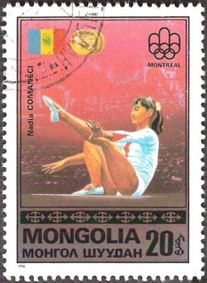
At age 6, she was chosen to attend Béla Károlyi's experimental gymnastics school after Károlyi spotted a friend and her turning cartwheels in a schoolyard. Károlyi was looking for gymnasts he could train from a young age and saw the two girls during recess. When recess ended, the girls ran inside. Károlyi went around the classrooms trying to find them, and eventually spotted Comăneci. (The other girl, Viorica Dumitru, went on to be one of Romania's top ballerinas.)
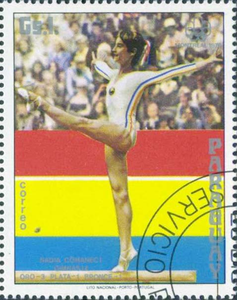
Comăneci was training with Károlyi by the time she was seven years old, in 1968. She was one of the first students at the gymnastics school established in Onesști by Béla and his wife, Márta. Unlike many of the other students at the Károlyi school, Comăneci was able to commute from home for many years because she lived in the town.
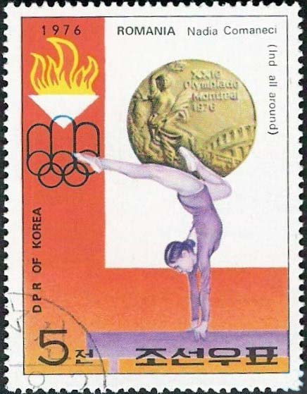
In 1970, she began competing as a member of her hometown team and became the youngest gymnast ever to win the Romanian Nationals. Comăneci's first major international success came at the age of 13, when she nearly swept the 1975 European Women's Artistic Gymnastics Championships in Skien, Norway, winning the all-around and gold medals on every event but the floor exercise, in which she placed second.
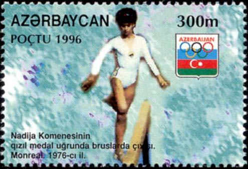
In March 1976, Comăneci competed in the inaugural edition of the American Cup at Madison Square Garden in Manhattan. She received rare scores of 10, which signified a perfect routine without any deductions, for her vault in the preliminary stage and for her floor exercise routine in the final of the all-around competition which she went on to win.
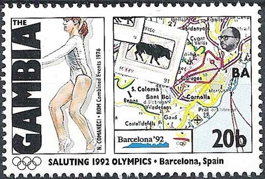
On 18 July 1976, Comăneci made history at the Montreal Olympics. During the team compulsory portion of the competition, she was awarded the first perfect 10 in Olympic gymnastics for her routine on the uneven bars. However, Omega SA - the traditional Olympics scoreboard manufacturer - was led to believe that it was impossible to receive a perfect ten, thus the scoreboard was not programmed to display that score.
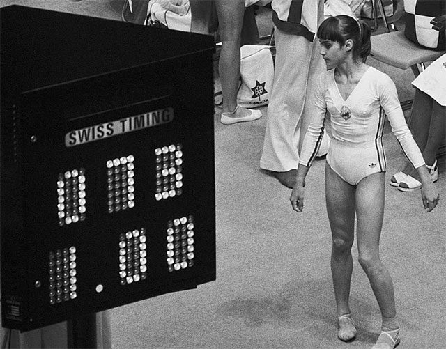
Comăneci's perfect 10 thus appeared as "1.00," the only mean by which the judges could indicate that she had indeed received a 10.
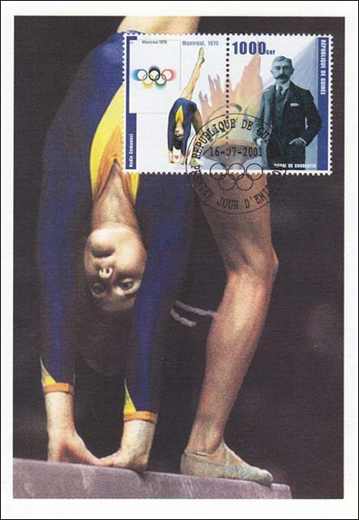
During the remainder of the Montreal Games, Comăneci earned six additional tens. She won gold medals for the individual all - around, the balance beam and uneven bars . She also won a bronze for the floor exercise and a silver as part of the team all-around.
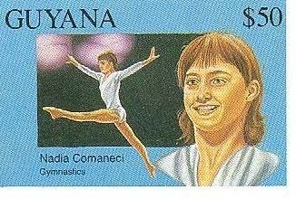
Comăneci's achievements are pictured in the entrance area of Madison Square Garden in Manhattan, where she is shown presenting her perfect beam exercise.
Comăneci was the first Romanian gymnast to win the Olympic all-around title. She also holds the record for being the youngest Olympic gymnastics all-around champion ever.
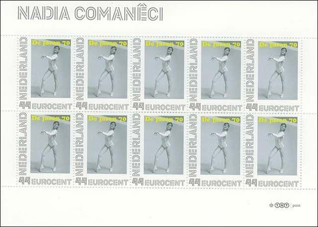
Following the 1977 Europeans, the Romanian Gymnastics Federation removed Comăneci from her longtime coaches, the Károlyis, and sent her to Bucharest on August 23 to train at the sports complex.
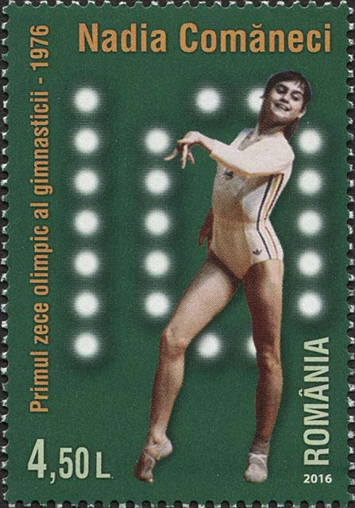
The change was not positive for Comăneci.
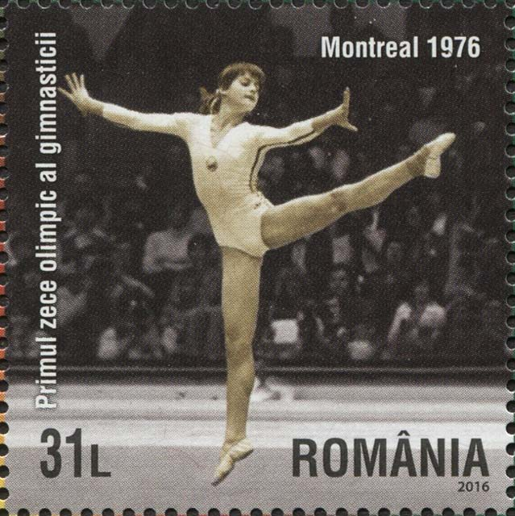
She was extremely unhappy; her gymnastics skills suffered, and she attempted suicide by drinking bleach.
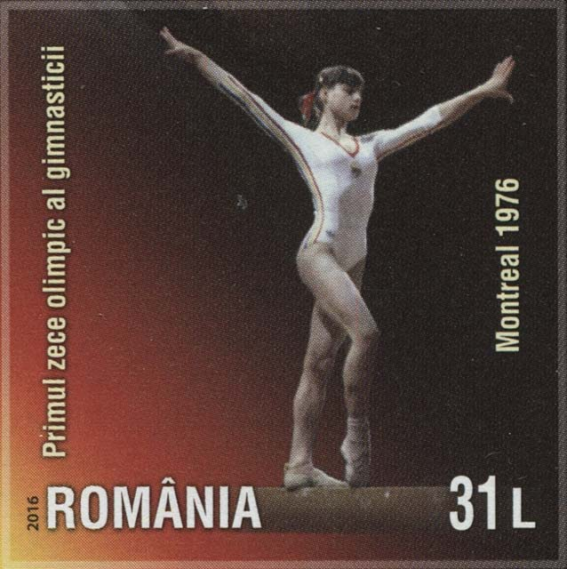
After the 1978 "Worlds", Comăneci was permitted to return to Deva and to the Károlyis. In 1979, Comăneci won her third consecutive European all-around title, becoming the first gymnast, male or female, to achieve this feat.
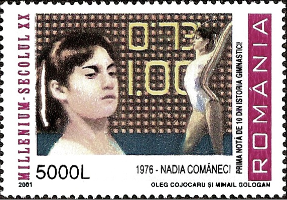
After the defection of the Károlyis, life changed drastically for Comăneci in ways she could not have predicted. Officials feared that she would also defect, and her actions were strictly monitored; she was no longer allowed to travel outside of Romania.
Nadia Comăneci in 2016
Comăneci then began a long period of planning for her escape. On the night of 27 November 1989, and a few weeks before the Romanian Revolution, which she had no idea was about to happen, Comăneci defected with a group of other Romanians.
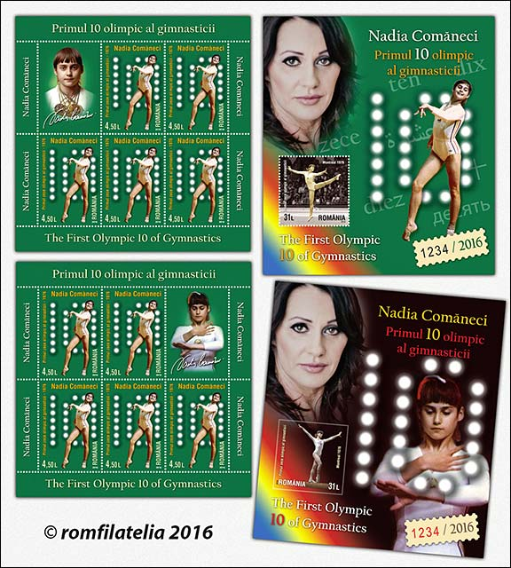
Once it began, their dangerous overland journey (mostly on foot and at night) took her through Hungary, Austria, and finally to the United States. They could be shot at the crossing of Romania's borders or, if caught, be sentenced to lengthy years of imprisonment.
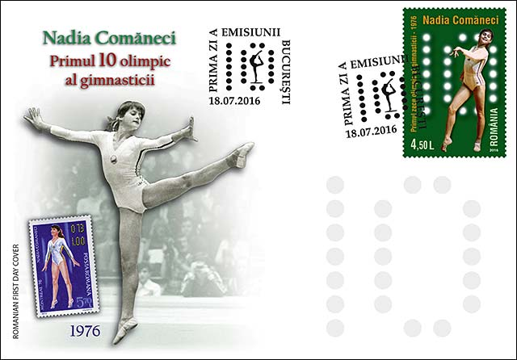
Comăneci is a well-known figure in the world of gymnastics; she serves as the honorary president of the Romanian Gymnastics Federation, the honorary president of the Romanian Olympic Committee, the sports ambassador of Romania, and as a member of the International Gymnastics Federation Foundation. Source.
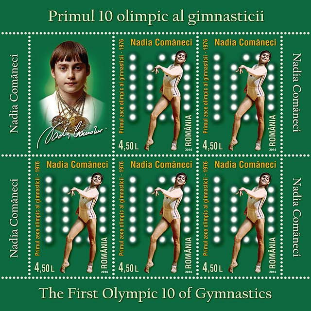
I present on this page many stamps, issued in Romania and worldwide, and a few photographs of the renowned Romania gymnast. Most of stamps were issued in 2016 by Romanian Post, to celebrate the 40th anniversary of her great victory at the Olympic Games in Montreal.
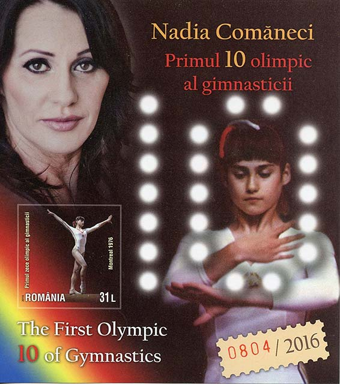
These stamps started a big controversy among the Romanian stamp collectors. Some of them, “the traditionalists” were unhappy that on these stamps “the perfect 10” appeared as a “10”. They had preffered that it appears as an “1.00”, as it appeared on the score board at the Olympic Games due to boards limitations.
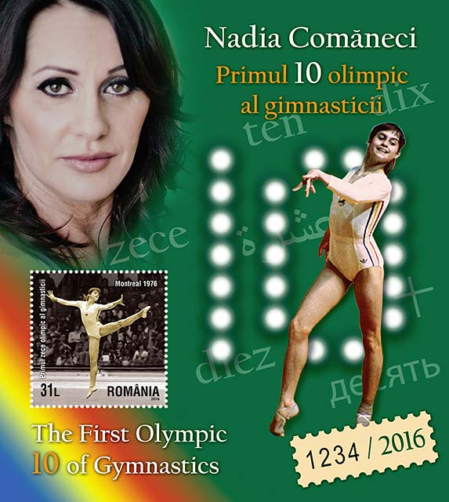
Marca emisă de România în 1977, şi care arată o persoană ce seamănă cu Nadia, este înscrisă cu numărul corect, chiar dacă straniu “1.00” (vezi deasupra). Eu rănân neutru în disputa despre cum este mai bine şi găsesc că importanţa problemei a fost exagerată.
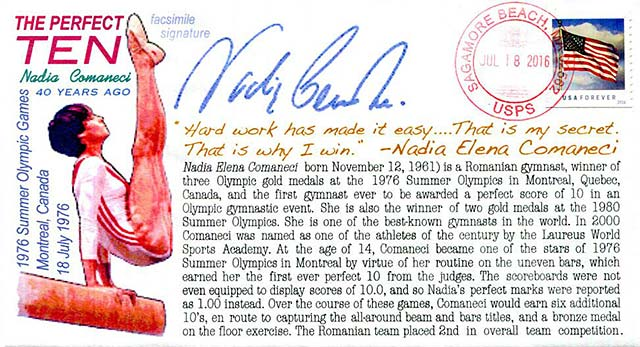
Ce rămâne este performanţa celei mai mari gimnaste românce din toate timpurile, o antrenoare şi o persoană şarmantă.
Nadia Comăneci in 2016
| Created: Oct. 11, 2018. Revised: March 21, 2019. Copyright © 2018 - 2019 by Victor Manta, Switzerland All rights reserved worldwide. |
|